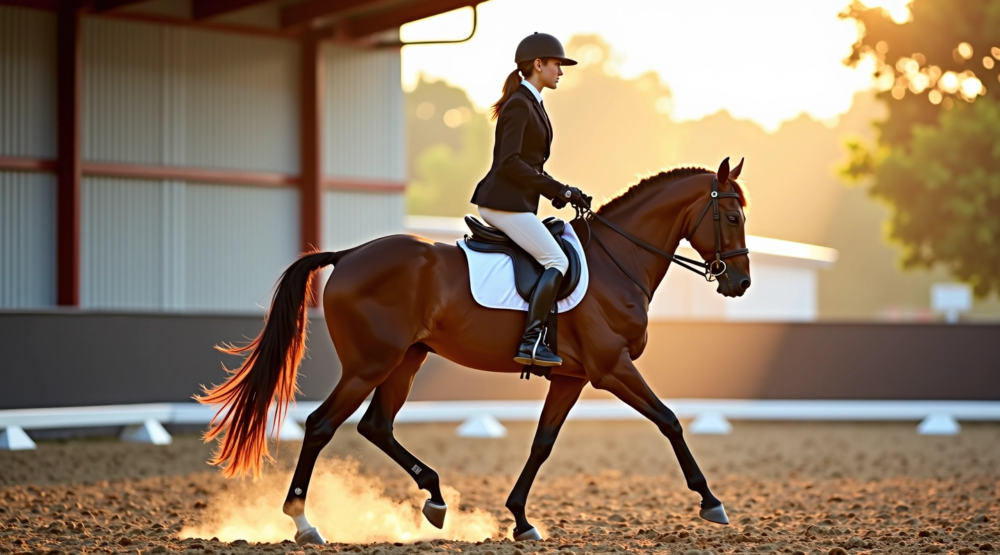
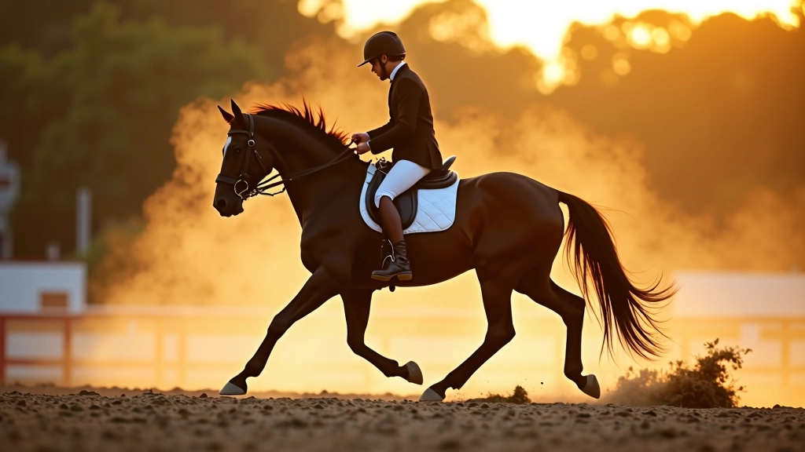

تدريب تغيير قدم العدو في ركوب الخيل
اكتشف أساسيات وتقنيات تدريب الحصان على تغيير القدم بكفاءة واحترافية
رحلتنا التدريبية
تطور أكاديمية الأهرام للفروسية عبر السنوات
تأسيس الأكاديمية وبدء برامج التدريب الأساسية
توسيع المناهج وإضافة دورات متخصصة في تغيير القدم
تطوير محتوى تعليمي متقدم وأدلة عملية شاملة
إطلاق منصة تفاعلية وموارد تدريبية محدثة
أحدث المقالات التدريبية
تصفح أهم المواضيع والتقنيات في عالم الفروسية

أساسيات تغيير القدم في العدو
شرح تفصيلي لكيفية تعليم الحصان تغيير قدمه بشكل صحيح. يتضمن التحضير الأساسي والخطوات الأولى للمبتدئين.
اقرأ المزيد
تقنيات التدريب المتقدمة
استكشف أساليب تدريب متطورة لتحسين أداء الحصان وتطوير مهارات الراكب في التحكم والتناسق.
اقرأ المزيد
تحليل الأخطاء الشائعة
تعرف على الأخطاء الأكثر شيوعاً في تدريب تغيير القدم وكيفية تصحيحها بفعالية وسرعة.
اقرأ المزيدعملية التدريب الفعّالة
خطوات منظمة لتحقيق أفضل النتائج
التقييم الأولي
فحص شامل لمستوى الراكب والحصان وتحديد الاحتياجات
التحضير الأساسي
بناء أساس قوي من خلال التمارين الأساسية والعلاقة بين الراكب والحصان
التطبيق المنتظم
ممارسة التقنيات بانتظام مع التركيز على الأداء الصحيح
التقييم والتطوير
متابعة التقدم وتعديل البرنامج حسب النتائج والأهداف
مجالات التخصص
ما نقدمه من خدمات ومعارف متنوعة
تدريب الحصان
تطوير مهارات الحصان الحركية والنفسية للوصول لأفضل أداء
تدريب الراكب
تحسين التحكم والتوازن والتناسق الحركي للراكب
الدورات التعليمية
برامج تدريب منظمة تناسب جميع مستويات الخبرة
تقييم الأداء
متابعة دورية وتقييم شامل للتقدم المحقق
موارد تعليمية
أدلة عملية وشاملة تغطي كل جوانب التدريب
استشارات شخصية
توجيه فردي وإجابة على جميع الأسئلة والاستفسارات
معايير الجودة
معايير صارمة نتبعها في جميع برامجنا التدريبية
التقييم الدقيق قبل بدء التدريب
برامج مخصصة حسب احتياجات كل متدرب
متابعة منتظمة والتقييم المستمر
توفير موارد تعليمية محدثة وشاملة
بيئة آمنة وملائمة للتدريب الفعّال
استجابة سريعة لجميع الاستفسارات والمخاوف
هل أنت مستعد للبدء؟
اتصل بنا اليوم واحصل على استشارة مجانية لتطوير مهاراتك في ركوب الخيل
نستخدم ملفات تعريف الارتباط لتحسين تجربتك على موقعنا. بالمتابعة، أنت توافق على سياسة الخصوصية الخاصة بنا.